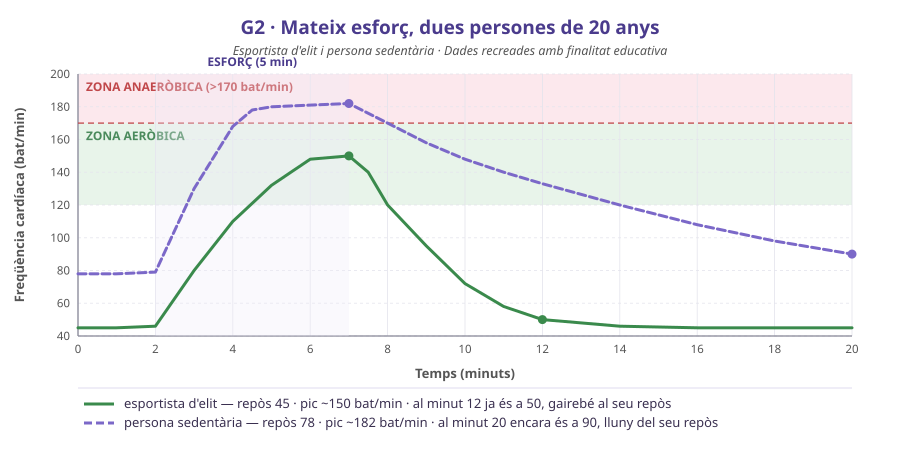
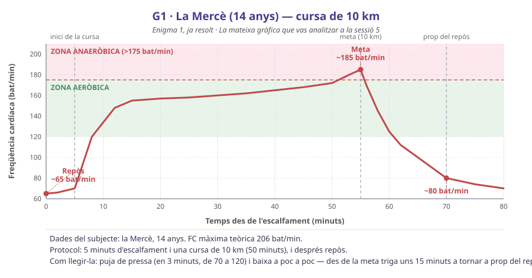
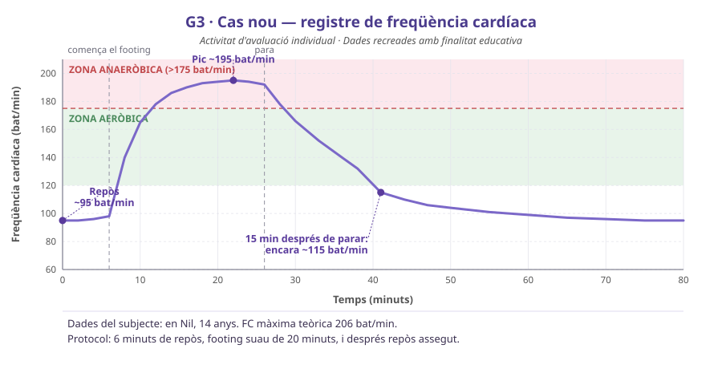

✕
📖 Paraules d'avui كلمات اليوم
freqüència cardíaca (FC)
معدل ضربات القلب
batecs del cor per minut
🪑
repòs
الراحة
quan no fas res
⛰️
pic
أعلى نقطة
el punt més alt de la gràfica
📉
recuperació
التعافي
la FC torna a prop del repòs
anèmia
فقر الدم
pocs eritròcits o poca hemoglobina
💡
hipòtesi
فرضية
explicació que s'ha de comprovar
🚶
zona aeròbica
المنطقة الهوائية
esforç amb prou oxigen
🏃
zona anaeròbica
المنطقة اللاهوائية
esforç sense prou oxigen
🔁 Paraules de sessions anteriors كلمات من الدروس السابقة
🔩
ferro
الحديد
sense ferro no es fa hemoglobina
hemoglobina
الهيموغلوبين
agafa l'oxigen de la sang
mitocondri
الميتوكوندريا
hi fabrica l'ATP (energia)
urea
اليوريا
residu; el treu el ronyó
lactat
اللاكتات
s'acumula al múscul sense prou oxigen
Altres paraules: glucosa = الغلوكوز · residu = الفضلات · ronyó = الكلية · bategar = ينبض · esforç = مجهود · cursa = سباق الجري · footing suau = جري خفيف · esportista = رياضي · sedentari/ària = شخص قليل الحركة
✕
🔗 Uneix amb una línia صِل بخط
repòs
أعلى نقطة في الرسم
pic
فضلات البروتينات؛ تُخرجها الكلية
recuperació
عندما لا تفعل شيئًا
hipòtesi
بدونه لا يتكوّن الهيموغلوبين
ferro
عودة النبض إلى الانخفاض بعد التمرين
urea
تفسير ممكن ما زال يجب اختباره
✕
📖 Per llegir اقرأ
L'enigma 1 és la gràfica de la Mercè: puja de pressa i baixa a poc a poc. L'enigma 2 és l'anàlisi de sang d'en Marc Fontana: es cansa molt de seguida.
اللغز الأول هو رسم مرسيه: يصعد بسرعة وينزل ببطء. اللغز الثاني هو تحليل دم مارك فونتانا: يتعب بسرعة كبيرة.
✕
🧩 Enigma 2 · sessions 3 i 4 — completa la cadena أكمل السلسلة
Al Marc li falta → fabrica menys → cada litre de la seva sang porta menys → el cor ha de bategar → arriba la .
ينقص مارك ___ ← يكوّن ___ أقل ← كل لتر من دمه يحمل ___ أقل ← على القلب أن ينبض ___ ← يظهر ___.
Banc de paraules بنك الكلمات
ferro الحديدhemoglobina الهيموغلوبينoxigen الأكسجينmés ràpid أسرعfatiga التعبaigua الماءmés a poc a poc أبطأ
✕
🩸 L'analítica d'en Marc Fontana (enigma 2) تحليل دم مارك فونتانا
Qui és: en Marc Fontana té 28 anys, s'entrena cada dia i té una FC en repòs de 82 bat/min (fa un any la tenia a 58).
مارك عمره 28 سنة ويتمرّن كل يوم. نبضه في الراحة 82 في الدقيقة (كان 58 قبل سنة).
| Valor القيمة | El Marc مارك | Normal الطبيعي | Com està كيف هي |
| Hemoglobina | 9,2 g/dL | 13,5 – 17,5 | baixa |
| Ferritina (reserva de ferro) مخزون الحديد | 8 ng/mL | 30 – 300 | baixa |
| Eritròcits خلايا الدم الحمراء | 4,1 milions/µL | 4,5 – 5,9 | una mica baixa |
| Urea | 34 mg/dL | 15 – 45 | normal |
| Creatinina الكرياتينين | 0,9 mg/dL | 0,7 – 1,3 | normal |
| Leucòcits خلايا الدم البيضاء | 6.200 /µL | 4.000 – 10.000 | normal |
🎨 Vermell = fora del normal · verd = dins del normal. أحمر = خارج الطبيعي · أخضر = طبيعي · baixa = منخفضة
El ronyó: la urea i la creatinina del Marc són normals. El seu ronyó funciona bé / funciona malament.
الكلية: اليوريا والكرياتينين عند مارك طبيعيان. كليته (تعمل جيدًا / تعمل بشكل سيئ). ضع دائرة حول واحدة.
✕
🧩 Enigma 1 · sessions 5 i 6 — encercla ضع دائرة
La FC de la Mercè puja en pocs minuts / en mitja hora.
نبض مرسيه يصعد (في بضع دقائق / في نصف ساعة).
Per baixar, triga més estona / menys estona, perquè el cos encara ha de netejar el lactat / ferro.
يستغرق نزوله (وقتًا أطول / وقتًا أقل)، لأن الجسم ما زال عليه أن يتخلّص من (اللاكتات / الحديد).
✅ Quan hagis acabat: busca a les fitxes de les sessions 2, 3, 5 i 6 el que no recordaves i corregeix-ho amb un altre color.
عندما تنتهي: ابحث عمّا لم تتذكره في أوراق الدروس السابقة (2 و3 و5 و6) وصحّحه بلون آخر.
✕
✕
📖 Per llegir اقرأ
Les dues persones de la gràfica tenen 20 anys i fan el mateix esforç, durant 5 minuts. Una està entrenada i l'altra no. La línia verda contínua és l'esportista; la lila de ratlletes, la persona sedentària.
الشخصان في الرسم عمرهما 20 سنة ويبذلان المجهود نفسه مدة 5 دقائق. أحدهما متدرّب والآخر لا. الخط الأخضر المتصل هو الرياضي؛ الخط البنفسجي المتقطع هو الشخص قليل الحركة.
✕
G2 · Mateix esforç, dues persones de 20 anyscomparació en parelles

✕
🔎 Mira la gràfica i encercla انظر إلى الرسم وضع دائرة
① Comença més avall del tot, al minut 0, l'esportista / la persona sedentària.
من يبدأ من الأسفل عند الدقيقة 0؟
② Arriba més amunt fent el mateix esforç l'esportista / la persona sedentària.
من يصل إلى أعلى بالمجهود نفسه؟
③ Al minut 12, qui està més a prop del seu repòs? l'esportista / la persona sedentària.
من هو أقرب إلى راحته عند الدقيقة 12؟
④ Per tant, es recupera més de pressa l'esportista / la persona sedentària.
إذن، من يتعافى أسرع؟
✕
✍️ Escriviu una conclusió, entre tots dos اكتبا معًا استنتاجًا
Acabeu la frase amb les vostres paraules. Ha de dir què passa i per quina raó.
أكمل الجملة بكلماتك، بالكتالونية. يجب أن تقول ماذا يحدث وما السبب.
L'esportista es recupera més de pressa que la persona sedentària perquè el seu cor
Banc de paraules بنك الكلمات
és més fort أقوىamb cada batec مع كل نبضةmou més sang يدفع دمًا أكثر
✕
✅ Ara comprova-ho تحقّق الآن
Un cor entrenat és més gros i fort: amb cada batec mou més sang, així que no li cal bategar tantes vegades per fer la mateixa feina. Ho havies escrit així?
القلب المتدرّب أكبر وأقوى: يدفع دمًا أكثر مع كل نبضة، لذلك لا يحتاج إلى أن ينبض مرات كثيرة للعمل نفسه. هل كتبت ذلك؟
✕
✕
✋ Aquest apartat es recull i es corregeix هذا الجزء يُجمع ويُقيَّم
Es fa individualment i sense demanar ajuda. Es valora que facis servir les dades i que el teu raonament es pugui seguir. Una hipòtesi ben raonada i equivocada val més que una resposta encertada sense arguments. Al final de la classe es recull aquest apartat i el full de sortida.
يُنجز وحدك ودون طلب مساعدة. يُنظر هل تستخدم البيانات وهل يُفهم تفكيرك. فرضية خاطئة بتعليل جيد أفضل من إجابة صحيحة بلا تعليل. في نهاية الحصة يُجمع هذا الجزء والورقة الأخيرة.
✕
📖 Per llegir اقرأ
La gràfica de la Mercè ja la coneixes: et servirà de model. La nova és d'en Nil, que té la mateixa edat. La baixada de la corba és la recuperació: com més de pressa baixa, millor està el cos. Compara sobretot on comencen i com baixen.
رسم مرسيه تعرفه من قبل: سيكون نموذجًا. الرسم الجديد هو رسم نيل، وهو في العمر نفسه. نزول الخط هو التعافي: كلما نزل أسرع كان الجسم أفضل. قارن خاصةً من أين يبدآن وكيف ينزلان.
✕
G1 · La Mercè (14 anys) — cursa de 10 kmenigma 1 · ja resolt

✕
G3 · Cas nou — en Nil, 14 anysavaluació individual

✕
① Busca aquests quatre números a les gràfiques i escriu-los
ابحث عن هذه الأعداد الأربعة في الرسمين واكتبها. كلها موجودة: اثنان في الكتابات داخل الرسم واثنان في الشريط السفلي.
| Què busco ماذا أبحث عنه | La Mercè (G1) | En Nil (G3) |
| FC en repòs النبض في الراحة | | |
| Punt més alt (pic) أعلى نقطة | | |
| Quin exercici va fer أي تمرين قام به | | |
✕
② La meva hipòtesi, pas a pas فرضيتي، خطوة خطوة
👁️ OBSERVO ألاحظ
L'exercici d'en Nil va ser més fluix / més fort que el de la Mercè, però el seu pic va ser més alt / més baix.
انظر إلى الجدول الذي ملأته وضع دائرة: كان تمرين نيل (أخف / أشد) من تمرين مرسيه، لكن أعلى نقطة عنده كانت (أعلى / أخفض).
Ara mira les dues baixades. Quinze minuts després de parar, la Mercè és a 80 i en Nil a 115:
La recuperació d'en Nil és més ràpida / més lenta que la de la Mercè.
انظر الآن إلى نزولهما. بعد خمس عشرة دقيقة من التوقف، مرسيه عند 80 ونيل عند 115: تعافي نيل (أسرع / أبطأ) من تعافي مرسيه.
❓ EM PREGUNTO أسأل
Si el cor ha de bategar tant per un esforç tan petit, deu ser perquè cada litre de la seva sang porta poc oxigen / massa oxigen.
إذا كان على القلب أن ينبض هكذا لمجهود صغير جدًا، فربما لأن كل لتر من دمه يحمل (أكسجينًا أقل / أكسجينًا كثيرًا جدًا).
🔗 CONNECTO أربط
Això s'assembla al cas del Marc Fontana / de l'esportista d'elit, que tenia l'hemoglobina baixa / la urea alta.
يشبه هذا حالة (مارك فونتانا / الرياضيين المحترفين)، الذي كان عنده (الهيموغلوبين منخفضًا / اليوريا مرتفعة).
✅ DEDUEIXO أستنتج
Crec que en Nil podria tenir , i el valor de la seva anàlisi de sang que estaria alterat és l'.
أعتقد أن نيل قد يكون عنده ___، وأن القيمة المتغيّرة في تحليل دمه هي ___.
Banc de paraules بنك الكلمات
anèmia فقر الدمuna infecció عدوىhemoglobina الهيموغلوبينcreatinina الكرياتينين
✕
③ Escriu-ho tu ara, amb les teves paraules
Amb el que has encerclat i completat a dalt, escriu dues frases explicant què li passa a en Nil.
انطلاقًا مما وضعت حوله دائرة وأكملته في الأعلى، اكتب بالكتالونية جملتين عمّا يحدث لنيل.
✕
✕
📖 Per llegir اقرأ
El cos és un sol sistema. El digestiu aporta la glucosa, el respiratori aporta l'oxigen, la sang ho reparteix i el mitocondri ho crema per fabricar ATP. Els residus surten per dues portes: el CO₂ pels pulmons, i la urea, les sals i l'aigua que sobra pel ronyó.
الجسم نظام واحد. الجهاز الهضمي يجلب الغلوكوز، والجهاز التنفسي يجلب الأكسجين، والدم يوزّعهما، والميتوكوندريا تحرقهما وتصنع ATP. تخرج الفضلات من بابين: CO₂ من الرئتين، واليوريا والأملاح والماء الزائد من الكلية.
🍞 Glucosa (digestiu) الغلوكوز (الجهاز الهضمي)+🫁 O₂ (respiratori) الأكسجين (الجهاز التنفسي)→🩸 La sang ho reparteix الدم يوزّع→⚡ ATP al mitocondri ATP في الميتوكوندريا→💨 CO₂ i aigua, pels pulmons CO₂ والماء، من الرئتين
🥩 Proteïnes (digestiu) البروتينات (الجهاز الهضمي)→🩸 La sang les reparteix الدم يوزّعها→🧪 En sobra: es fa urea ما يتبقّى: تتكوّن اليوريا→💧 Urea, sals i aigua pel ronyó اليوريا والأملاح والماء من الكلية
✕
⚗️ La reacció que fa el mitocondri (la respiració cel·lular) عملية الميتوكوندريا
glucosa + O₂ → CO₂ + H₂O + ATP
D'aquesta reacció en surten CO₂ i aigua, no urea. La urea ve de les proteïnes que sobren. Per això són dues cadenes.
تُخرج هذه العملية CO₂ والماء، وليس اليوريا. اليوريا تأتي من البروتينات المتبقية. لهذا توجد سلسلتان.
✕
🧩 Completa el cicle أكمل الدورة
El digestiu porta la . El respiratori porta l'. Tots dos arriben a la cèl·lula per la . Al es fabrica l'.
الجهاز الهضمي يجلب ___. الجهاز التنفسي يجلب ___. يصلان إلى الخلية عبر ___. في ___ يتكوّن ___.
Banc de paraules بنك الكلمات
glucosa الغلوكوزoxigen الأكسجينsang الدمmitocondri الميتوكوندرياATPurea اليورياbufeta المثانة
✕
🚪 Per quina porta surt cada residu? من أي باب تخرج كل فضلة؟
Compte: no en va un a cada columna. Mira bé quants n'hi ha de cada.
انتبه: لا تذهب واحدة إلى كل عمود. انظر جيدًا كم يوجد في كل منهما.
| 🫁 Surt pels PULMONS تخرج من الرئتين | 🫘 Surt pel RONYÓ تخرج من الكلية |
|---|
| |
| |
| |
Banc de paraules بنك الكلمات
CO₂urea اليورياsals الأملاحaigua que sobra الماء الزائد
✕
✍️ Una sola peça, tot el sistema قطعة واحدة، النظام كله
Al Marc només li falta una cosa: ferro. Encercla tot allò que se li acaba veient afectat:
ينقص مارك شيء واحد فقط: الحديد. ضع دائرة حول كل ما يتأثر به:
l'oxigen que porta la sang الأكسجين في الدم el color dels ulls لون العينين la feina del cor عمل القلب l'energia dels músculs طاقة العضلات l'alçada الطول
Escriu per quina raó una sola peça pot afectar tantes coses:
اكتب بالكتالونية: لماذا تستطيع قطعة واحدة أن تؤثر في كل هذه الأشياء؟
✕
✕
👥 Com us repartiu la feina كيف تتقاسمان العمل
Rol A — investigador/a de camp: seccions 2 (Mètode) i 3 (Resultats).
Rol B — analista: seccions 4 (Discussió) i 5 (Conclusions).
La secció 1 la feu tots dos junts. 📋 Rúbrica: és al web, a la sessió 7. Mireu-la abans de començar.
الدور A: الجزءان 2 (الطريقة) و3 (النتائج). الدور B: الجزءان 4 (المناقشة) و5 (الاستنتاج). الجزء 1 تُنجزانه معًا. معايير التقييم موجودة في الموقع، في الدرس 7: انظرا إليها قبل البدء. يُسلَّم هذا التقرير في Classroom.
✕
⚠️ Això no és un diagnòstic هذا ليس تشخيصًا
Les dades d'aquesta classe es prenen amb els dits i un cronòmetre: serveixen per aprendre a llegir una gràfica. No serveixen per dir que ningú està malalt. Qui diagnostica és un metge.
بيانات هذه الحصة تؤخذ بالأصابع والساعة: إنها لتعلّم قراءة الرسوم. لا يمكن القول بها إن أحدًا مريض. التشخيص يقوم به الطبيب.
✕
🆘 Si no tens les teves dades — joc de reserva (la Berta, 14 anys) إذا لم تكن عندك بياناتك
Fes-lo servir només si vas faltar a la sessió 5 o no tens les teves mesures. Digues-ho a l'informe: «hem fet servir el joc de dades de reserva».
استخدمها فقط إذا لم تحضر الدرس 5 أو لم تكن عندك قياساتك. اكتب في التقرير أنك استخدمت بيانات بيرتا.
FC en repòs, 3 matins: 70 · 74 · 72 → mitjana 72 bat/min.
Prova d'esforç (3 min de repòs, 2 min de cursa a fons, 7 min de recuperació asseguda), en bat/min:
النبض في الراحة، 3 صباحات: المتوسط 72. اختبار المجهود: 3 دقائق راحة، دقيقتان جري بأقصى قوة، 7 دقائق تعافٍ جالسًا.
| min | 0 | 1 | 2 | 3 | 4 | 5 | 6 | 7 | 8 | 9 | 10 | 11 | 12 |
| FC | 73 | 72 | 74 | 72 | 132 | 178 | 141 | 118 | 104 | 96 | 90 | 87 | 85 |
La Berta té 14 anys: FC màxima teòrica 206 i llindar anaeròbic cap a 175. Amb el pic de 178 el toca just un moment.
✕
1 · Pregunta d'investigació (la fem els dos junts) سؤال البحث (معًا)
Una pregunta d'investigació es pot respondre amb dades. Per exemple: «Quant triga la meva FC a tornar al repòs després de córrer 2 minuts?»
سؤال البحث يُجاب عنه بالأعداد. مثال: بعد الجري دقيقتين، كم من الوقت يحتاج نبضي ليعود إلى الراحة؟ اكتب سؤالكما بالكتالونية.
La nostra pregunta:
✕
2 · Mètode [Rol A] الطريقة
Explica què vau fer, pas a pas. Contesta aquestes tres coses:
اشرح ماذا فعلت خطوة خطوة، ليستطيع شخص آخر تكراره. اكتب هذه الأمور الثلاثة بالكتالونية:
· On vas prendre el pols i durant quants segons? أين أخذت النبض وكم ثانية؟
· Quin exercici vas fer i quanta estona? أي تمرين قمت به وكم من الوقت؟
· Quantes vegades vas repetir la mesura? كم مرة كرّرت القياس؟
✕
3 · Resultats [Rol A] النتائج
Els resultats són només dades: la taula i la gràfica. Encara no s'expliquen.
النتائج أعداد فقط: جدول ورسم. لا تشرح بعد.
| Moment الوقت | FC (bat/min) النبضات في الدقيقة |
|---|
| |
| |
| |
| |
| |
Enganxa aquí la teva gràfica de la sessió 5, o torna-la a dibuixar: ألصق هنا رسمك من الدرس 5 أو أعد رسمه
✕
4 · Discussió [Rol B] المناقشة
Aquí sí que s'explica. Completa les frases:
Quan vaig començar a córrer, la FC va pujar perquè els músculs necessitaven més .
هنا يجب الشرح. عندما بدأت الجري ارتفع النبض لأن العضلات كانت تحتاج إلى مزيد من ___.
Vaig arribar a la zona , perquè la meva FC màxima va ser de .
وصلت إلى المنطقة ___، لأن أعلى نبض عندي كان ___.
Comparant-me amb l'esportista i el sedentari de la gràfica G2, m'assemblo més a…
إذا قارنت نفسي بالرياضي وبالشخص قليل الحركة في الرسم G2، فبمن أشبه أكثر؟
Banc de paraules بنك الكلمات
oxigen الأكسجينaeròbica الهوائيةanaeròbica اللاهوائية
⚠️ Compte: ells tenen 20 anys i tu en tens 14. Pots comparar la forma de la corba (com puja i com baixa), no els números un per un.
انتبه: عمرهما 20 سنة وعمرك 14. يمكنك مقارنة شكل الخط (كيف يصعد وكيف ينزل)، لا كل عدد على حدة.
✕
5 · Conclusions [Rol B] الاستنتاج
Torna a la pregunta de la secció 1 i respon-la en una o dues frases.
ارجع إلى سؤال الجزء 1 وأجب عنه بالكتالونية في جملة أو جملتين.
✕
🏠 Per a casa للبيت
Acaba la teva part de l'informe i entrega-la al Classroom. Torna a llegir la teva secció en veu alta abans d'enviar-la.
أكمل جزءك من التقرير وسلّمه في Classroom. قبل الإرسال، أعد قراءة جزئك بصوت عالٍ.
Abans de marxar: el full d'avaluació final (o el formulari del Classroom), individual.
قبل الخروج: ورقة التقييم النهائي (أو استمارة Classroom)، 12 دقيقة، وحدك.